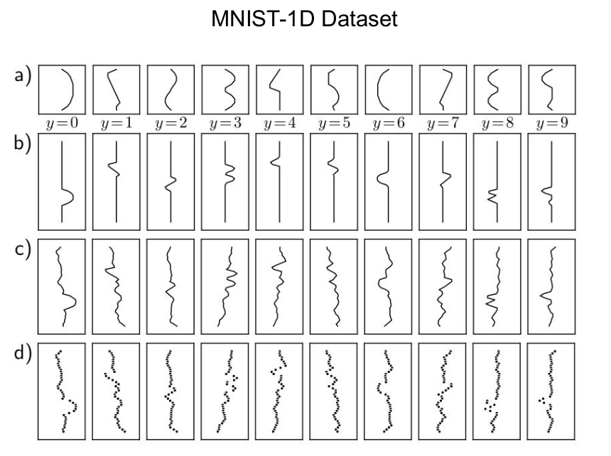
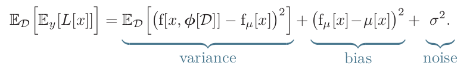
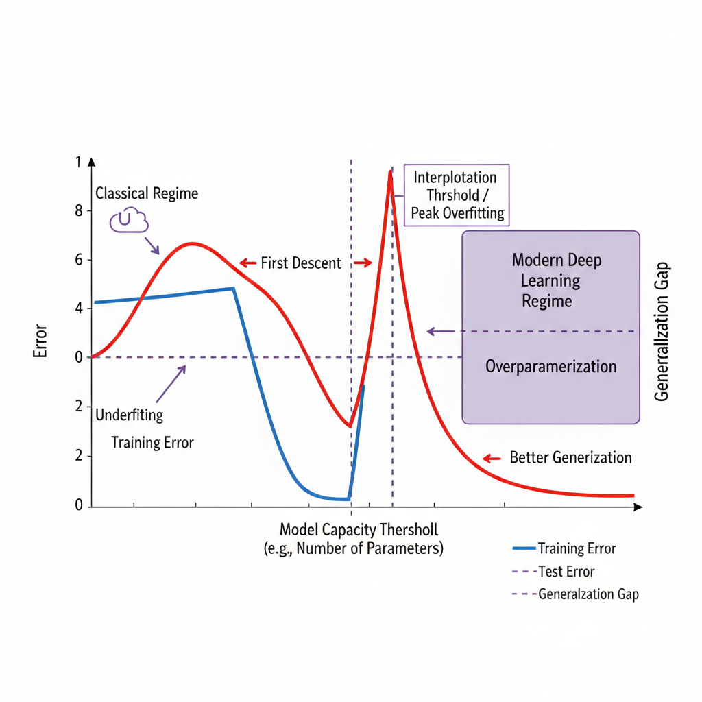

Report – Week 04: Performance & Regularization
Presenters: Ben Halima Ibrahim and Zoghlami Fadi
Date: 10.11.2025
Summary
Chapter 8: Measuring performance
I - Training a simple model:
A neural network with sufficient capacity will mostly perform well on the training dataset. However, this does not mean that it will generalize well on the testing dataset (which is normally new and unseen data for the model). This causes a big problem especially for real-world scenarios, where the model's performance has to be as good as possible.
=> Our goal is to train a model that generalizes well on new data
The test errors have three distinct causes:
- the inherent uncertainty in the task
- the amount of training data
- the choice of model
In the first section of this chapter, a simple model is trained on the MNIST-1D dataset, which is 1D analogue of the MNIST dataset: each data example is created by randomly transforming one of the templates and adding noise.

Our simple model/neural network consists of D_i = 40 inputs and D_o = 10 outputs representing the number of classes the dataset has (numbers form 0 to 9). The neural network has 2 hidden layers each with D = 100 hidden units. Multiclass cross-entropy is used as a loss function with the Softmax function to produce class probabilities.
The model is then trained for 6000 steps (150 epochs) using SGD (Stochastic Gradient Descent) as a learning algorithm with a learning rate of 0.1 and a batch-size of 100. After the training process, we tested our trained model on 1000 extra examples from the dataset.

In figure (a), we can see that the training error decreases as the training proceeds (the training data is classified perfectly after around 4000
training steps). The testing error, however, decreases as well but to about 40% and does not drop below it.
In figure (b), the training loss also decreases continuously towards zero as the training proceeds. The testing loss, on the other hand, decreases at first but suddenly starts going up after around 1500 training steps reaching higher values than before.
=> Our model is making, in this case, the same mistakes but with increasing confidence and this will decrease the probability of correct answers, and therefore increase the negative log-likelihood
=> Our model has then memorized the training data but does not generalize well on the testing data
II - Sources of error:
When a neural network fails to generalize well, there are mainly three sources of error:
- Noise: the data generation process itself includes the addition of noise to the input data. Therefore, there are multiple possible valid outputs for each input (figure (a) below). This may be caused due to a stochastic element in the data generation process (mislabeled data as an example). In some rare cases, the noise can be absent: for example, a network might approximate a function that is deterministic but requires significant computation to evaluate.
=> However, noise is usually a fundamental limitaion on the test performance - Bias: this happens when the model is not flexible enough to fit the data perfectly. In figure (b) below for example, the three-region model (cyan line) cannot exactly fit the true function (black line), even with the best possible parameters (gray regions represent signed error).
- Variance: this occurs when there are limited training examples, and therefore there is no way to distinguish noise in the underlying data from systematic changes in the underlying function.This means that, for different training datasets, the result will be slightly different each time (figure (c) below). In practice, however, there can be an additional variance due to the stochastic learning algorithm, which does not necesseraliy converge to the same solution each time.

- Mathematical formulation of test error:

III - Reducing error:
The Noise component is insurmountable, which means there is nothing we can do to avoid it. It represents a fundamental limit on expected model performance. However, we can reduce the Variance and Bias terms.
- Reducing Variance: variance results from limited noisy training data. This actually means that we can reduce it by increasing the quantity of our training data. This approach averages out the inherent noise and ensures that the input space is well sampled.
The figure below shows the effect of training with three different samples (6, 10 and 100 samples). The best-fitting model for each dataset is then plotted: as we can see, with only 6 samples, the fitted function is different each time and the variance term is therefore significant. When we increase the number of samples, the fitted models become very similar and the variance term reduces as a result.

=> In general, adding more training data almost always improves test performance.
- Reducing Bias: in order to reduce the bias term, we can increase the capacity of our model/neural network (number of hidden units and/or layers) which makes it more flexible and able to describe the true underlying function.
The figure below shows the effect of increasing the number of linear regions (3, 5 and 10 regions): by increasing the number of linear regions, the model becomes flexible enough to fit the true function closely. As a result, the bias term decreases (gray region in a-c). Unfortuantely, this causes the variance term to go up (gray region d-f).
=> Increasing the model capacity does not necesseraliy reduce the test error ==> Bias-Variance trade-off

- Bias-Variance trade-off: when a model is too simple (low capacity), it ignores useful information, and the error is composed mostly of that from bias ==> Underfitting
When a model is too complex, it memorizes non-general patterns, and the error is composed mostly of that from variance ==> Overfitting
In both cases the model does not generalize well on new unseen data. The ideal model aims to minimize both bias and variance. It lays in the sweet-spot in between (not too simple, nor too complex) => Achieving such a balance will yield the minimum error

| Bias | Variance | Result | |
|---|---|---|---|
| Underfitting | High | Low | Poor training and test performances |
| Optimal | Moderate | Moderate | Best generalization |
| Overfitting | Low | High | Poor test performance |
- Double descent: in classical machine learning, increasing the model complexity follows a U-shaped curve: test error decreases as bias drops, but eventually increases as the model overfits to noise (high variance). However, modern deep networks often exhibit double descent:
The First Descent: Error drops as the model learns the underlying function.
The Interpolation Threshold: As capacity increases, the model reaches a point where it can exactly fit (interpolate) the training data, leading to zero training error. At this threshold, the test error typically peaks because the model is highly sensitive to training noise.
The Second Descent: Surprisingly, increasing capacity beyond this threshold causes the test error to decrease again, often reaching a lower error than the previous "optimal" point. This is because larger models tend to find smoother solutions that generalize better.

This phenomenon is illustrated in the book using the MNIST-1D dataset, where the test error continues to decrease even after the model has reached the capacity to memorize the dataset. While classical theory suggests that highly overparameterized models should generalize poorly, the double descent curve shows that larger models can actually lead to better performance, challenging traditional notions of overfitting.
IV - Choosing hyperparameters:
Hyperparameters consist of not only the number of hidden layers and the number of hidden units per layer, but also of the learning rate, the choice of the learning algorithm itself, the batch size and much more. The process of finding the best hyperparameters is called hyperparameter search or neural architecture search (when focusing on the network structure).
Hyperparameters are typically chosen empirically: we train many models with different hyperparameters on the same training dataset, then measure their performance and retain the best model. However, measuring the performance does not happen on the test set, as this may produce good results on only that specific set but the model does not generalize well on other new unseen data. Instead, we use a third dataset called the validation set. That means, for each choice of hyperparameters we train our model on the training set and evaluate its performance on the validation set and finally test the model using the testing set.
Chapter 9: Regularization
Introduction: Why Regularization Is Needed
Neural networks are powerful function approximators, capable of learning highly complex relationships from data. However, this expressive power can easily become a drawback. When a model has many parameters, it can fit the training data extremely closely, including random fluctuations and noise. While this often leads to very low training error, it does not necessarily translate into good performance on unseen data. This phenomenon is known as overfitting.
Regularization addresses this issue by limiting the effective complexity of the model and encouraging solutions that generalize beyond the training set. Rather than focusing solely on minimizing training error, regularization introduces additional constraints or biases that reflect the idea that simpler models are often preferable. In practice, regularization methods guide the learning process toward parameter configurations that are more stable, less sensitive to small perturbations, and better aligned with the underlying structure of the data.
Several regularization techniques are presented, ranging from explicit penalties added to the loss function to implicit effects arising from optimization, as well as data- and model-based approaches such as dropout, ensembling, and data augmentation...
1. Explicit Regularization
Explicit regularization modifies the training objective by adding a penalty term that discourages certain parameter configurations, most commonly those involving large weight values. The optimization problem becomes:

Here, ℓ𝑖(𝑥𝑖,𝑦𝑖) represents the data loss, 𝑔(𝜙) is a regularization function, and 𝜆 controls the strength of the penalty. A common choice is L2 regularization, where 𝑔(𝜙)=∥𝜙∥^2
The intuition behind explicit regularization is that large weights tend to produce highly sensitive models, where small changes in the input can lead to large changes in the output. By penalizing large parameter values, the optimization process must balance two competing objectives: fitting the training data accurately and keeping the model parameters within a reasonable range. As 𝜆 increases, the model is increasingly encouraged to favor simpler parameter configurations, even if this slightly increases training error.
1.1 Loss Landscape Interpretation

A useful way to understand explicit regularization is through loss landscapes. The original loss surface may contain many sharp minima corresponding to highly specialized solutions that fit the training data very closely. The regularization term typically has a smooth, convex shape centered around zero. When the two are combined, the resulting loss surface becomes smoother and often shifts the location of the minimum toward flatter regions. These flatter minima are generally associated with better generalization, as they indicate solutions that are less sensitive to small changes in the parameters.
1.2 Probabilistic Interpretation of Regularization
Regularization can also be interpreted within a probabilistic framework. Training a neural network using standard loss functions corresponds to maximizing the likelihood of the observed data:

Introducing a regularization term is equivalent to assuming a prior distribution over the parameters. This leads to:

Taking the negative logarithm reveals that the regularization term corresponds to the negative log-prior. For example, penalizing large weights (L2) is equivalent to assuming that parameters are more likely to be close to zero than extremely large in magnitude. This interpretation provides a principled justification for regularization and clarifies the role of the hyperparameter 𝜆 as a trade-off between fitting the data and enforcing prior assumptions.
2. Implicit Regularization
2.1 Gradient Descent

Interestingly, regularization effects can arise even when no explicit penalty is added to the loss function. Gradient descent (cyan trajectory), when implemented with a finite step size 𝛼, does not follow the exact continuous trajectory (gray trajectory) implied by gradient flow. Instead, parameters are updated discretely:

When adding regularization term to the continuous path, it causes the optimization path to deviate from it's current trajectory to the same gray one. It can be shown that gradient descent effectively minimizes a modified loss function similar to an explicit regularization case (c). mathematically, this can be shown as :

The additional term penalizes regions where the gradient norm is large, meaning steep parts of the loss surface. As a result, gradient descent tends to favor flatter minima, which are known to generalize better. This phenomenon also explains why, in some cases, larger learning rates lead to improved generalization, as they strengthen this implicit regularization effect.

2.2 Implicit Regularization in Stochastic Gradient Descent (SGD)
Stochastic gradient descent introduces an additional source of implicit regularization through randomness. Because gradients are computed using mini-batches, each update is only an approximation of the true gradient over the entire dataset. Different mini-batches can produce slightly different gradient directions.
The effective loss minimized by SGD can be written as:

The new additional term corresponds to the variance of gradients across mini-batches. Each mini-batch gives a slightly different gradient direction. if one mini-batch points one way, and another batch points the opposite way ⇒ poor generalization. if all batches roughly agree, that means the model fits everything reasonably well ⇒ better generalization. meaning SGD implicitly favors solutions where all batches agree on the gradient direction, indicating a more uniform fit across the dataset.
Consequently, SGD tends to favor parameter configurations where gradients are consistent across batches, meaning the model fits all parts of the data reasonably well rather than fitting some examples extremely well at the expense of others. This provides insight into why smaller batch sizes often lead to better generalization and why SGD frequently outperforms full-batch gradient descent in practice.
3. Early Stopping
Early stopping is a simple yet powerful regularization technique based on monitoring model performance during training. Initially, training reduces both training and validation error as the model learns the general structure of the data. After a certain point, continued training primarily improves performance on the training set while degrading performance on the validation set.

In the early stages, the model output closely follows the true underlying function. With prolonged training, the model becomes increasingly complex and overfits the noisy training points (e & f).
By monitoring the validation loss and stopping training when it stops improving, early stopping effectively limits model complexity. This technique has been shown to behave similarly to L2 regularization, as it prevents weights from growing too large.
4. Ensembling
Ensembling improves generalization by combining the predictions of multiple models. Instead of relying on a single trained network, the final prediction is obtained by averaging outputs or pre-softmax activations; Each individual model may overfit in a slightly different way. By averaging their predictions, random fluctuations and noise are reduced and individual errors tend to cancel out. Common ensembling strategies include: -Training models with different random initializations -Bagging (bootstrap aggregating) -Using different architectures or hyperparameters
5. Dropout
Dropout introduces regularization by randomly deactivating neurons during training. This prevents the network from relying too heavily on specific activations and forces it to distribute information across multiple pathways.

By preventing neurons from relying too strongly on specific other neurons (co-adaptation), dropout forces the network to learn more robust, distributed representations. Over many iterations, sharp irregularities or undesirable kink (b) in the learned function are smoothed out.

8. Noise Injection
Adding noise during training is another way to encourage robustness. Noise can be applied to inputs, parameters, or labels.

Adding noise forces the model to perform well despite small perturbations, discouraging overfitting. Input noise teaches invariance to irrelevant variations, weight noise encourages stability under parameter perturbations, and label smoothing prevents the model from becoming overly confident.
9. Transferlearning
Higher-level regularization strategies rely on sharing information across tasks or data variations. Transfer learning allows a model to reuse representations learned from a large related dataset, reducing the need to learn everything from scratch, which is particularly useful when labeled data is scarce.
Multi-task learning trains a single model on several related tasks simultaneously, encouraging shared representations that capture common structure.
10. Data Augmentaion
Data augmentation increases the effective size of the training dataset by applying label-preserving transformations to existing samples. Common transformations include flipping, rotating, cropping, or adding color variations. By exposing the model to a wider range of inputs, data augmentation teaches invariance to irrelevant variations and significantly reduces overfitting.
Discussion Notes
Measuring performance
How do we determine if we have enough training samples?
- There is no fixed limit or specific number of samples required, it depends on the task and the dimensionality of the data.
- As the number of dimensions increases, the volume of the input space grows exponentially so the amount of data required also increases exponentially.
What is the Generalization Gap?
- It is the difference between the model's performance on the training data and its performance on new test data.
Why does Test Loss increase even while accuracy stabilizes or improves?
- Overconfidence, doesn't allow us to know if it's making a mistake because it's so confident.
- Softmax Effect, activations are pushed to extreme values to make the probability of the correct class higher.
What is the Bias-Variance Trade-off? Balance between model complexity and error:
- High bias, low variance - underfitting.
- Low bias, high variance - overfitting.
-
What exactly is bias and variance?
- Bias: fitting is limited by the expressiveness of the model => underfitting
- Variance: prediction strongly depends on specific training set instead of averaging => overfitting
-
Low training error doesn't guarantee low test error, but it is the hope: generalization
-
Training increases confidence even in wrong predictions => cross-entropy can grow even while accuracy stays constant (sign of overfitting)
-
Generalization is measured by test error or gap between training and test error
-
Should you stop training when the testing error stays the same?
- Potentially reduces overfitting
-
When do you have enough training/test data?
- More data generally helps, also depends on problem
- Architecture of neural network should be able to "accommodate" the data
- Cost factor must be considered
-
High-dimensional problems require exponentially many samples, underlying lower-dimensional manifolds could help
Regularization
What is Explicit Regularization?
- Explicit regularization involves adding a term to the loss function that penalizes certain parameter values to discourage overfitting.
- Maximizing the product of Likelihood and Prior is equivalent to minimizing the sum of Loss and Regularization.
How does L2 Regularization work?
- It adds a penalty proportional to the sum of the squared weights.
- This encourages weights to be small.
- It reduces variance but increases bias. In over-parameterized models.
-
Gaussian prior: belief that small parameters are more probable; applies to hypothesis space not directly to data
-
How does regularization come into the bias-variance-tradeoff?
- Increases bias while reducing variance and overfitting risk (depends on type)
-
Data augmentation increases complexity despite producing samples that lie in the same manifold
-
Why use L2-regularization, especially in comparison to L1-regularization?
- L1 promotes zero weights while L2 penalizes large weights smoothly
References
- IBM - What is overfitting ? [Link]
- Three Sources of Model Error: Bias, Variance, and Noise [Link]
- A Modern Take on the Bias-Variance Tradeoff in Neural Networks [Link]
- The Bias-Variance trade-off [Link]
- The Importance of Data Splitting [Link]
- Deep Double Descent: where bigger models and more data hurt [Link]